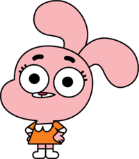

Анаис Уоттерсон

Анаис Уоттерсон — одна из главных персонажей мультфильма. Носит оранжевое платье с белой отделкой. Также она относится к немногим членам семьи Уоттерсонов, которые носят обувь, наряду с Дарвином и бабушкой Джоджо. В первом сезоне имеет персиковую шерсть и округлые глаза, а во втором у неё бледно-розовая шерсть и более вытянутые глаза.
Личность
Анаис обладает весьма высоким уровнем IQ для четырёхлетней девочки. Анаис без сомнения можно назвать самым умным членом семьи Уоттерсонов. Несмотря на свой возраст, она была принята в школу Элмора, но не в один класс с Гамболом, а в восьмой класс. Также она является важным участником Клуба Физики. Её знание данного предмета спасло её от Боберта в состоянии боевого режима в серии "The Club".
Анаис часто применяет свой интеллект в самых безвыходных ситуациях. Например, в серии "The Responsible" она быстро придумала план по эвакуации из затопленного дома.
Настроение
Анаис, так же, как и её мать, иногда бывает очень вспыльчивой. Например, когда её куклу забрала Тина, она была крайне расстроена и пыталась уговорить Гамбола вернуть куклу строя милое лицо, а также угрожала всё рассказать матери. В другой раз, когда она наконец-то дотащила чемодан бабушки Джоджо на верхний этаж и услышала от неё, что теперь его надо снести вниз, она разозлилась и в гневе выбросила чемодан в окно.
Хоть Анаис и является самым младшим членом семьи, ей часто приходится принимать на себя роль взрослого. Так ей часто приходится помогать братьям с уроками и следить за порядком в доме.
Детское поведение
Анаис, так же, как и её мать, иногда бывает очень вспыльчивой. Например, когда её куклу забрала Тина, она была крайне расстроена и пыталась уговорить Гамбола вернуть куклу строя милое лицо, а также угрожала всё рассказать матери. В другой раз, когда она наконец-то дотащила чемодан бабушки Джоджо на верхний этаж и услышала от неё, что теперь его надо снести вниз, она разозлилась и в гневе выбросила чемодан в окно.
Хоть Анаис и является самым младшим членом семьи, ей часто приходится принимать на себя роль взрослого. Так ей часто приходится помогать братьям с уроками и следить за порядком в доме.
Интересные факты
Возможно, Анаис не может завести друзей из-за того, что унаследовала это от Ричарда, поскольку тот тоже не мог завести друзей, но показано это было только в серии "The Lady".
В серии "The Choices" Анаис изначально была названа Аньяс или Аниас, но самостоятельно себя переименовала в Анаис. Но в серии "The Rival", после рождения Анаис, Николь говорит о ней как о Анаис. Неизвестно, было ли это сделано специально или же сценаристы забыли об этом.
Она учится на год старше Гамбола и Дарвина, как она сказала в серии "The Others".
Как и у Дарвина, её первое слово также оказалось "Гамбол", причём её первое предложение было: "Это Гамбол сделал!".